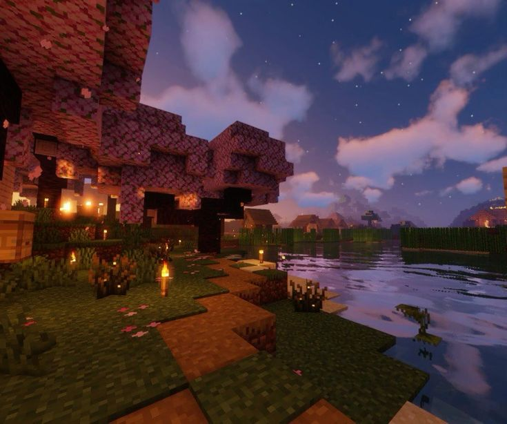

Minecraft — популярная игра-песочница. Сражайтесь с монстрами, стройте дома, добывайте ресурсы, торгуйте с жителями и победите дракона Эндера для прохождения игры!
Это версия приложения для операционной системы Windows

Photo by Minecraft
Также в игре доступен многопользовательский режим. Вы можете выбрать: сражаться с монстрами и выживать или поиграть в мини‑игры. Мини‑игры могут быть разными: от BedWars и SkyWars до обычного выживания с плюшками.